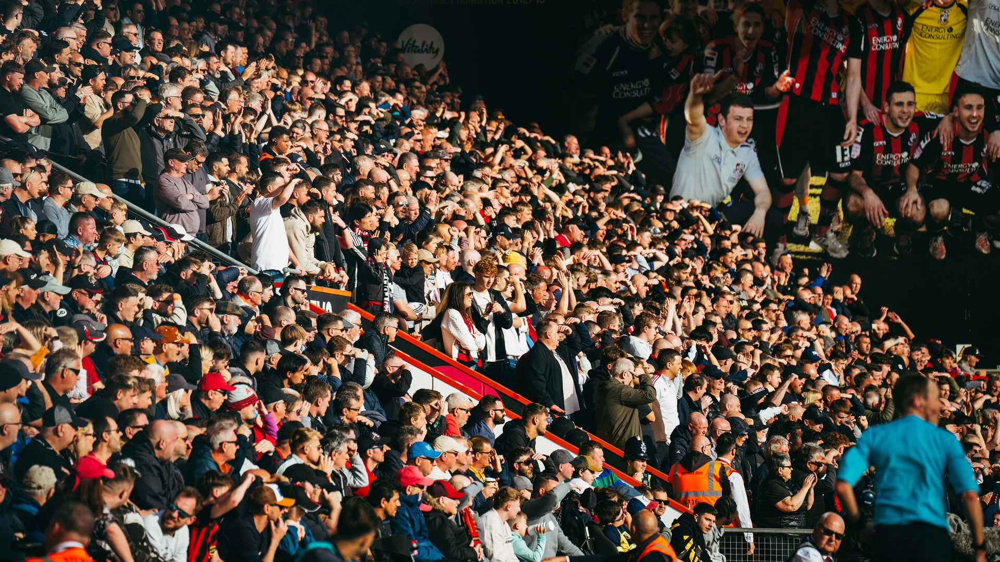

Whistle FC head coach Johannes Hoff Thorup has reflected on a memorable 2025/26 campaign, which saw the Club finish seventh in EFL League One and lift the Vertu Trophy at Wembley.
The Whistlers ended the league season with 74 points, finishing just one point outside the play-off places after a strong final run of form.
Speaking after the conclusion of the campaign, Thorup said:
“There is pride, but also frustration. Pride because the players gave everything, the staff worked incredibly hard, and the supporters stayed with us through every moment.
“But there is frustration because we were so close. To finish one point outside the play-offs shows how fine the margins are at this level.”
Thorup, who arrived at the Club in October 2025, praised the response of the squad following a challenging start to the season.
“When I came in, the most important thing was to create belief and structure. The players were honest, open and willing to learn, and that gave us a platform to improve.
“We became harder to beat, more confident in possession, and more connected as a team. That is something we can build on.”

The head coach also reflected on the Club’s Vertu Trophy success, describing it as an important moment in Whistle FC’s recent journey.
“Winning the Vertu Trophy was a special day for everyone connected with the Club. For the players, the staff, the supporters and the town, it was a reward for the work that has been done here.
“This Club has been through difficult moments in its history, so to lift silverware again means a lot.”
However, Thorup insisted that the achievement must now become a foundation rather than a finishing point.
“We cannot be satisfied. The trophy gives us belief, but the league table shows us there is still work to do.
“If we want to take the next step, we have to be more consistent, more ruthless and more demanding of ourselves every single day.”
Thorup also thanked the Whistle supporters for their backing throughout the campaign.
“The supporters have been outstanding. They understand what this Club represents, and they push us forward.
“At home and away, they made the players feel that they were part of something bigger than just one match or one result.”
Looking ahead to the summer, Thorup said the Club must use the disappointment of narrowly missing out on the play-offs as motivation.
“The summer is important. We have to make good decisions, keep the right mentality in the building and come back stronger.
“The message to the players is simple: remember how close we were, remember how much it hurt, and use that feeling.”
Whistle FC would like to thank all supporters for their incredible backing throughout the 2025/26 season.